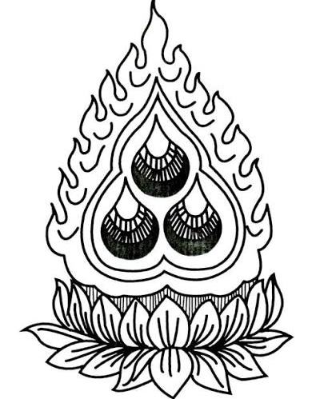
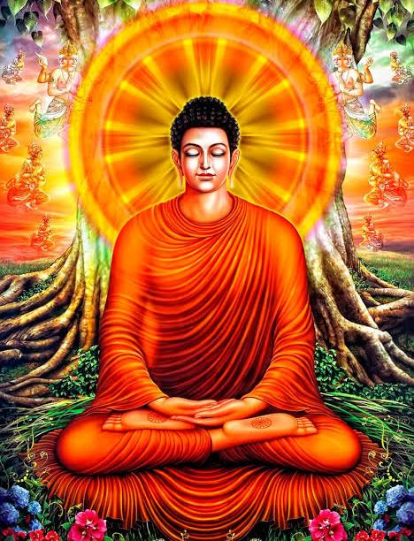
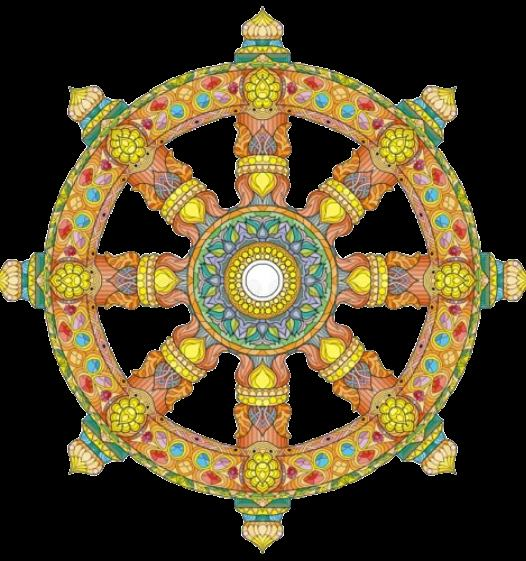
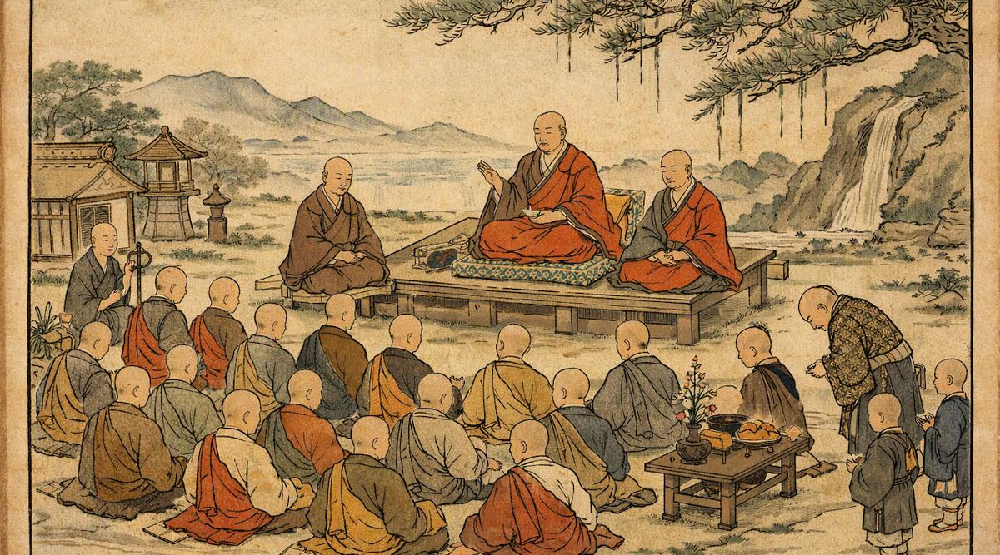

Три драгоценности
Три драгоценности - это Будда, Дхарма и Сангха. Они являются основой буддийского пути и тем, к чему обращается человек, решивший следовать учению Будды.

Три драгоценности - это Будда, Дхарма и Сангха. Они являются основой буддийского пути и тем, к чему обращается человек, решивший следовать учению Будды. Их называют драгоценностями, потому что они подобны сокровищу, которое невозможно измерить золотом или драгоценными камнями. Будда указывает путь, Дхарма показывает, как по нему идти, а Сангха помогает не свернуть с него в одиночестве.
Будда
Будда - это пробуждённый, тот, кто достиг полного понимания природы существования и освободился от страдания. Под Буддой прежде всего понимают Сиддхартху Гаутаму, человека, который оставил жизнь принца, отказался от мирских привязанностей и после долгих поисков достиг пробуждения. Будда не является богом или небесным правителем, который карает и награждает людей. Он был человеком, который самостоятельно прошёл путь к освобождению и затем указал этот путь другим. Поэтому для последователя Дхармы Будда прежде всего является Учителем и примером того, чего способен достичь человек.
Монах смотрит на образ Будды не только с почтением, но и как на напоминание о собственном пути. Если другой человек смог освободиться от невежества и страдания, значит, и самому человеку следует стремиться к мудрости, а не ждать спасения от кого-либо.


Дхарма
Дхарма - это учение Будды и путь, ведущий к освобождению. Она объясняет природу страдания, причины человеческих привязанностей и показывает, каким образом человек может изменить свою жизнь и свой ум.
Дхарма - это не только слова, записанные в священных текстах. Её необходимо применять в повседневной жизни. Правильная речь, добрые поступки, отказ от жестокости, внимательность к своим мыслям, медитация и стремление к мудрости являются частью следования Дхарме.
Можно знать множество наставлений Будды, но если человек продолжает жить во власти ненависти, жадности и заблуждения, он ещё не следует Дхарме по-настоящему. Учение становится частью жизни только тогда, когда человек начинает применять его к самому себе.
Сангха
Сангха - это община последователей Будды. В первую очередь этим словом называют общину монахов и монахинь, посвятивших себя духовному пути, однако в более широком смысле Сангха может включать всех искренних последователей Дхармы. Для монаха Сангха является не просто местом, где он живёт. Это община людей, которые вместе изучают учение, соблюдают обеты, занимаются медитацией, помогают друг другу и поддерживают монастырь.
Путь к освобождению может быть трудным. Человек способен сомневаться, поддаваться гневу или забывать о своих намерениях. Поэтому рядом с ним находятся другие последователи Дхармы, которые могут наставить его, поддержать и напомнить о выбранном пути.

Мир приходит изнутри. Не ищи его снаружи.Будда Шьякмуни